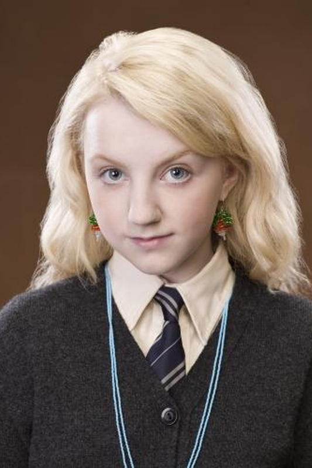
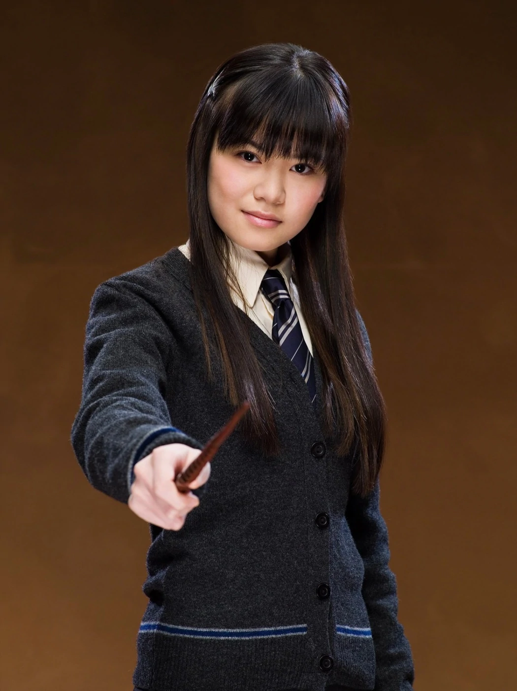
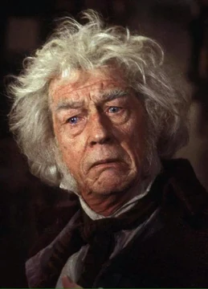
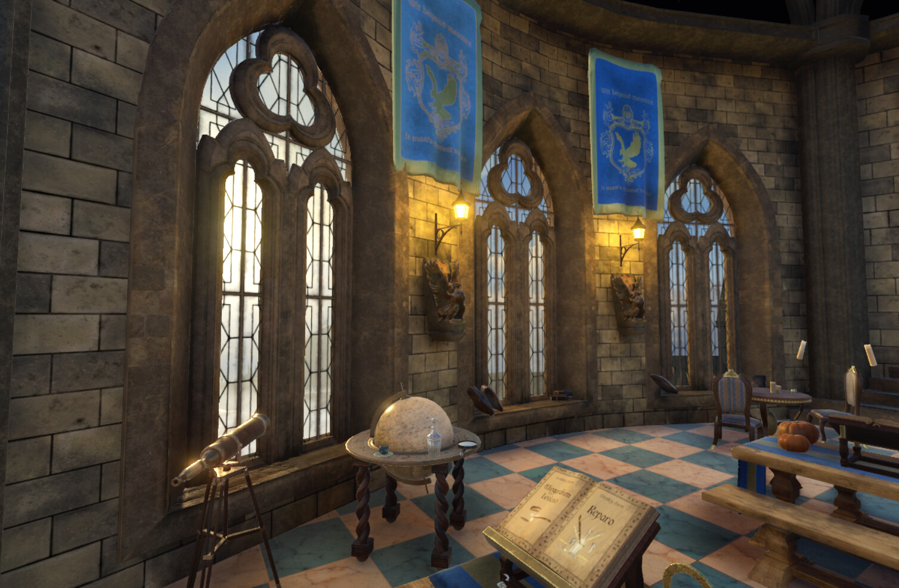
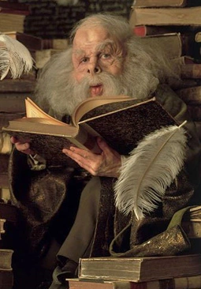

Destaques
Luna Lovegood
Ela é filha de Xenofílio e Pandora Lovegood e cresceu em uma família que acreditava em criaturas mágicas e fenômenos inexplicáveis.
Leia MaisCho Cheng
Cho é conhecida por sua beleza e habilidade no quadribol, especialmente como a artilheira da equipe de quadribol de Corvinal.
Leia MaisGarrick Olivaras
Sr. Olivaras é conhecido por seu profundo conhecimento sobre varinhas e suas características individuais. Ele é uma figura respeitada no mundo bruxo por sua perícia e pela qualidade das varinhas que produz.
Leia MaisHistória
A Corvinal, fundada por Rowena Ravenclaw. Seus membros, comumente, são caracterizados por sua inteligência, aprendizado e sabedoria. Suas cores são o azul e bronze, o animal emblemático é uma águia e sua fantasma patrono é a Dama Cinzenta. A casa possui um diretor notável, o Mestre de Feitiços Fílio Flitwick.
A casa corresponde aproximadamente ao elemento ar, e é por essa razão que suas cores foram escolhidas; o azul representa o céu e o bronze pode representar as penas de uma águia, ambos tendo muita relação com tal elemento.
Traços
A Casa Corvinal, em Hogwarts, é conhecida por suas características distintivas que a tornam única entre as quatro casas da escola de magia. Os corvinais são admirados por sua inteligência aguçada, sede de conhecimento e um profundo amor pelo aprendizado.
Um traço marcante dos membros da Corvinal é sua curiosidade insaciável. Eles estão sempre em busca de respostas para perguntas difíceis e adoram explorar o desconhecido. A biblioteca de Hogwarts frequentemente se torna o refúgio favorito dos corvinais, onde podem passar horas imersos em livros e estudos.
Outra qualidade notável da Casa Corvinal é a criatividade. Eles têm uma mente aberta e são capazes de pensar de forma inovadora, encontrando soluções criativas para problemas complexos. Essa criatividade muitas vezes os leva a descobertas surpreendentes no mundo da magia.
Os corvinais também são valorizados por sua sabedoria. Eles não apenas acumulam conhecimento, mas também o aplicam com discernimento. Muitas vezes, são vistos como conselheiros sábios entre seus amigos, oferecendo orientação ponderada e raciocínio lógico.
Em resumo, os traços da Casa Corvinal, incluindo inteligência, curiosidade, criatividade e sabedoria, criam uma comunidade de alunos que valoriza o conhecimento e a busca por respostas. Eles são a prova de que a magia vai além dos feitiços e poções, abrangendo a exploração intelectual e a compreensão profunda do mundo mágico.
Reputação
A Casa Corvinal, em Hogwarts, desfruta de uma reputação notável que a distingue das outras casas da escola de magia. Sua reputação é amplamente baseada nas qualidades excepcionais de seus membros e nas contribuições significativas que eles fazem para o mundo da magia.
Uma das características que mais contribui para a reputação da Corvinal é a inteligência. Os corvinais são conhecidos por sua mente aguçada e amor pelo aprendizado. Eles são frequentemente vistos como os acadêmicos da escola, sempre em busca de conhecimento e respostas para perguntas complexas.
A Casa Corvinal também é admirada por sua criatividade. Seus membros têm uma mente aberta e uma habilidade única de pensar fora da caixa. Eles estão dispostos a explorar novas ideias e encontrar soluções criativas para problemas, o que muitas vezes os leva a descobertas surpreendentes na magia.
A reputação da Corvinal é reforçada pela sabedoria de seus membros. Eles não apenas acumulam conhecimento, mas também têm a capacidade de aplicá-lo de forma sábia. Os corvinais são frequentemente vistos como conselheiros confiáveis e são valorizados por sua capacidade de tomar decisões ponderadas.
Em resumo, a reputação da Casa Corvinal é construída sobre a base de qualidades como inteligência, criatividade e sabedoria. Seus membros são admirados por seu compromisso com o aprendizado e pela maneira como contribuem para a magia e a sabedoria do mundo bruxo. A Casa Corvinal é verdadeiramente um farol de conhecimento e inovação em Hogwarts.
Sala Comunal
A Sala Comunal da Casa Corvinal é um lugar verdadeiramente único e inspirador em Hogwarts. Localizada em uma torre alta, a sala oferece uma vista deslumbrante do castelo e dos terrenos da escola. Ela reflete a essência da casa, celebrando a inteligência, a criatividade e a busca pelo conhecimento.
Quando se entra na Sala Comunal, a primeira coisa que chama a atenção é a vista panorâmica das janelas. Os corvinais podem admirar o céu estrelado à noite ou a paisagem exuberante durante o dia. Essa vista espetacular muitas vezes inspira a contemplação e o pensamento profundo.
O mobiliário da sala é projetado para incentivar a colaboração e a discussão. Mesas e cadeiras estão dispostas de forma a facilitar debates e estudos em grupo. Os corvinais são conhecidos por seu amor pelo aprendizado, e a Sala Comunal é o lugar perfeito para compartilhar conhecimento e ideias.
Uma característica notável da Sala Comunal é a presença de bustos esculpidos de bruxos e bruxas famosos que se destacaram em suas áreas de estudo. Essas estátuas homenageiam aqueles que contribuíram significativamente para o mundo da magia e servem como fonte de inspiração para os membros da casa.
A Sala Comunal da Corvinal é também um local tranquilo e sereno, ideal para leitura e reflexão. A biblioteca da casa está estrategicamente localizada próxima à sala, permitindo fácil acesso a uma vasta coleção de livros e recursos acadêmicos.
Em resumo, a Sala Comunal da Casa Corvinal é um espaço que encoraja a busca pelo conhecimento, a criatividade e a colaboração. Com sua vista deslumbrante, ambiente inspirador e mobiliário projetado para a troca de ideias, a Sala Comunal é um refúgio para os corvinais, onde podem explorar o mundo da magia e expandir seus horizontes intelectuais.
Diretor da casa
Um dos diretores mais notáveis da Corvinal foi o Professor Fílio Flitwick, também Mestre de Feitiços em Hogwarts. Sua paixão pelo ensino e seu compromisso com a excelência acadêmica eram inspiradores para os alunos da casa. Ele também desempenhava um papel ativo na orientação dos alunos em suas buscas intelectuais.
Independentemente de quem ocupa o cargo de Diretor, sua principal responsabilidade é criar um ambiente onde a busca pelo conhecimento seja incentivada e valorizada. Os diretores da Corvinal são conhecidos por seu apoio aos alunos em suas jornadas acadêmicas e por seu incentivo à curiosidade intelectual.
O Diretor da Corvinal também desempenha um papel importante nas competições intercasas de Hogwarts, como o Torneio Tribruxo e o Quadribol. Eles lideram a casa com entusiasmo e incentivam a participação ativa dos alunos em todas as atividades escolares.
Em resumo, o Diretor da Casa Corvinal é uma figura essencial na vida dos corvinais em Hogwarts. Eles são responsáveis por promover a busca pelo conhecimento, a criatividade e a excelência acadêmica. Cada Diretor deixa sua marca única na casa, contribuindo para a herança rica e intelectual da Corvinal em Hogwarts.